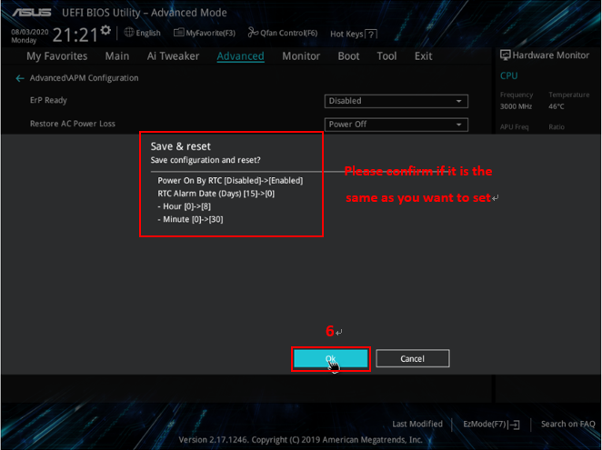

https://massgrave.dev/windows_ltsc_links.html
https://schneegans.de/windows/unattend-generator/
Win10_11_opt.bat
@echo off
@echo.
@echo Timezone
tzutil /s "China Standard Time"
@echo Powercfg
powercfg.exe /hibernate off
powercfg -change -standby-timeout-dc 10
powercfg -change -standby-timeout-ac 0
powercfg -setdcvalueindex SCHEME_CURRENT 4f971e89-eebd-4455-a8de-9e59040e7347 5ca83367-6e45-459f-a27b-476b1d01c936 0
powercfg -setacvalueindex SCHEME_CURRENT 4f971e89-eebd-4455-a8de-9e59040e7347 5ca83367-6e45-459f-a27b-476b1d01c936 0
@echo Disable Win10 Memory Compression
PowerShell.exe -command "& {Disable-MMAgent -mc}"
@echo Bitlocker disabled
reg.exe add "HKEY_LOCAL_MACHINE\SYSTEM\CurrentControlSet\Control\BitLocker" /f /v PreventDeviceEncryption /t REG_DWORD /d 0x00000001
manage-bde -off C:
manage-bde -off D:
manage-bde -off E:
manage-bde -off F:
manage-bde -off G:
@echo Turn Off Windows 10 11 privacy settings
@echo Turn_Off_to_send_required_diagnostic_data
reg.exe add "HKEY_CURRENT_USER\SOFTWARE\Microsoft\Windows\CurrentVersion\Diagnostics\DiagTrack" /f /v ShowedToastAtLevel /t REG_DWORD /d 0x00000001
reg.exe add "HKEY_LOCAL_MACHINE\SOFTWARE\Microsoft\Windows\CurrentVersion\Policies\DataCollection" /f /v AllowTelemetry /t REG_DWORD /d 0x00000001
reg.exe add "HKEY_LOCAL_MACHINE\SOFTWARE\Microsoft\Windows\CurrentVersion\Policies\DataCollection" /f /v MaxTelemetryAllowed /t REG_DWORD /d 0x00000001
@echo Turn_Off_Avertising_ID_for_current_user
reg.exe add "HKEY_CURRENT_USER\Software\Microsoft\Windows\CurrentVersion\AdvertisingInfo" /f /v Enabled /t REG_DWORD /d 0x00000000
@echo Turn_Off_improve_inking_and_typing_recognition
reg.exe add "HKEY_CURRENT_USER\Software\Microsoft\Input\TIPC" /f /v Enabled /t REG_DWORD /d 0x00000000
@echo Turn_Off_Find_My_Device
reg.exe add "HKEY_LOCAL_MACHINE\SOFTWARE\Microsoft\MdmCommon\SettingValues" /f /v LocationSyncEnabled /t REG_DWORD /d 0x00000000
@echo Turn_Off_diagnostic_data
reg.exe add "HKEY_LOCAL_MACHINE\SOFTWARE\Policies\Microsoft\Windows\DataCollection" /f /v AllowTelemetry /t REG_DWORD /d 0x00000000
@echo Turn_Off_Tailored_experiences_with_diagnostic_data
reg.exe add "HKEY_CURRENT_USER\Software\Microsoft\Windows\CurrentVersion\Privacy" /f /v TailoredExperiencesWithDiagnosticDataEnabled /t REG_DWORD /d 0x00000000
@echo Turn_Off_Location_service_for_your_account_and_apps
reg.exe add "HKEY_CURRENT_USER\Software\Microsoft\Windows\CurrentVersion\CapabilityAccessManager\ConsentStore\location" /f /v Value /t REG_SZ /d Deny
@echo Feedback_frequency_Never
reg.exe add "HKEY_CURRENT_USER\SOFTWARE\Microsoft\Siuf\Rules" /f /v NumberOfSIUFInPeriod /t REG_DWORD /d 0x00000000
reg.exe delete "HKEY_CURRENT_USER\SOFTWARE\Microsoft\Siuf\Rules" /f /v PeriodInNanoSeconds
@echo Disable Ink Workspace
reg.exe add "HKEY_LOCAL_MACHINE\SOFTWARE\Policies\Microsoft\WindowsInkWorkspace" /f /v AllowSuggestedAppsInWindowsInkWorkspace /t REG_DWORD /d 0x00000000
reg.exe add "HKEY_LOCAL_MACHINE\SOFTWARE\Policies\Microsoft\Windows\System" /f /v AllowWindowsInkWorkspace /t REG_DWORD /d 0x00000000
@echo Disable Ink Workspace app suggestions
reg.exe add "HKEY_CURRENT_USER\Software\Microsoft\Windows\CurrentVersion\PenWorkspace" /f /v PenWorkspaceAppSuggestionsEnabled /t REG_DWORD /d 0x00000000
reg.exe add "HKEY_CURRENT_USER\Software\Microsoft\InputPersonalization\TrainedDataStore" /f /v HarvestContacts /t REG_DWORD /d 0x00000000
reg.exe add "HKEY_CURRENT_USER\Software\Microsoft\Personalization\Settings" /f /v AcceptedPrivacyPolicy /t REG_DWORD /d 0x00000000
@echo Disable Activities Feed
reg.exe add "HKEY_LOCAL_MACHINE\SOFTWARE\Policies\Microsoft\Windows\System" /f /v PublishUserActivities /t REG_DWORD /d 0x00000000
reg.exe add "HKEY_LOCAL_MACHINE\SOFTWARE\Policies\Microsoft\Windows\System" /f /v EnableActivityFeed /t REG_DWORD /d 0x00000000
reg.exe add "HKEY_LOCAL_MACHINE\SOFTWARE\Policies\Microsoft\Windows\System" /f /v UploadUserActivities /t REG_DWORD /d 0x00000000
@echo Disable Microsoft consumer experiences
reg.exe add "HKEY_LOCAL_MACHINE\SOFTWARE\Policies\Microsoft\Windows\CloudContent" /f /v DisableWindowsConsumerFeatures /t REG_DWORD /d 0x00000001
@echo Disabled dumpstacklog in Win10 21h1
reg.exe add "HKEY_LOCAL_MACHINE\SYSTEM\CurrentControlSet\Control\CrashControl" /f /v EnableLogFile /t REG_DWORD /d 0x00000000
@echo Remove the "3D Objects" entry from Windows 10 Explorer
reg.exe delete "HKEY_LOCAL_MACHINE\SOFTWARE\Microsoft\Windows\CurrentVersion\Explorer\MyComputer\NameSpace\{0DB7E03F-FC29-4DC6-9020-FF41B59E513A}" /f
reg.exe delete "HKEY_LOCAL_MACHINE\SOFTWARE\WOW6432Node\Microsoft\Windows\CurrentVersion\Explorer\MyComputer\NameSpace\{0DB7E03F-FC29-4DC6-9020-FF41B59E513A}" /f
@echo Disabled News and Interests on taskbar feature for all users
reg.exe add "HKEY_LOCAL_MACHINE\SOFTWARE\Policies\Microsoft\Windows\Windows Feeds" /f /v EnableFeeds /t REG_DWORD /d 0x00000000
@echo Show extensions for known file types
reg.exe add "HKEY_CURRENT_USER\Software\Microsoft\Windows\CurrentVersion\Explorer\Advanced" /f /v HideFileExt /t REG_DWORD /d 0x00000000
@echo Turn off Win11 old RightMenu
reg.exe add "HKCU\Software\Classes\CLSID\{86ca1aa0-34aa-4e8b-a509-50c905bae2a2}\InprocServer32" /f /ve
@echo Disabled Fastboot
reg.exe add "HKEY_LOCAL_MACHINE\SYSTEM\CurrentControlSet\Control\Session Manager\Power" /f /v HiberbootEnabled /t REG_DWORD /d 0x00000000
@echo Disabled Win10/11 System Restore
reg.exe add "HKEY_LOCAL_MACHINE\SOFTWARE\Policies\Microsoft\Windows NT\SystemRestore" /f /v DisableSR /t REG_DWORD /d 0x00000001
@echo Disable web search in the windows taskbar
reg.exe add "HKEY_CURRENT_USER\Software\Microsoft\Windows\CurrentVersion\Search" /f /v BingSearchEnabled /t REG_DWORD /d 0x00000000
reg.exe add "HKEY_CURRENT_USER\Software\Microsoft\Windows\CurrentVersion\Search" /f /v AllowSearchToUseLocation /t REG_DWORD /d 0x00000000
reg.exe add "HKEY_CURRENT_USER\Software\Microsoft\Windows\CurrentVersion\Search" /f /v CortanaConsent /t REG_DWORD /d 0x00000000
@echo Hidden taskview buttom and peopleband
reg.exe add "HKEY_CURRENT_USER\Software\Microsoft\Windows\CurrentVersion\Explorer\Advanced" /f /v ShowTaskViewButton /t REG_DWORD /d 0x00000000
reg.exe add "HKEY_CURRENT_USER\Software\Microsoft\Windows\CurrentVersion\Explorer\Advanced\People" /f /v PeopleBand /t REG_DWORD /d 0x00000000
reg.exe add "HKEY_CURRENT_USER\Software\Microsoft\Windows\CurrentVersion\Search" /f /v SearchboxTaskbarMode /t REG_DWORD /d 0x00000000
@echo Always never combine taskbar (0 is true, 2 is false)
reg.exe add "HKEY_CURRENT_USER\Software\Microsoft\Windows\CurrentVersion\Explorer\Advanced" /f /v TaskbarGlomLevel /t REG_DWORD /d 0x00000002
@echo Disable Windows Update Delivery Optimization
reg.exe add "HKEY_LOCAL_MACHINE\SOFTWARE\Policies\Microsoft\Windows\DeliveryOptimization" /f /v DODownloadMode /t REG_DWORD /d 0x00000064
@echo Open Controal Panel with ClassicView
reg.exe add "HKEY_CURRENT_USER\Software\Microsoft\Windows\CurrentVersion\Policies\Explorer" /f /v ForceClassicControlPanel /t REG_DWORD /d 0x00000001
@echo Disable AutoPlay
reg.exe add "HKEY_CURRENT_USER\Software\Microsoft\Windows\CurrentVersion\Explorer\AutoplayHandlers" /f /v DisableAutoplay /t REG_DWORD /d 0x00000001
@echo Show File Name Extensions
reg.exe add "HKEY_CURRENT_USER\Software\Microsoft\Windows\CurrentVersion\Explorer\Advanced" /f /v HideFileExt /t REG_DWORD /d 0x00000000
@echo Hide Quick Access from File Explorer
reg.exe add "HKEY_LOCAL_MACHINE\SOFTWARE\Microsoft\Windows\CurrentVersion\Explorer" /f /v HubMode /t REG_DWORD /d 0x00000001
@echo Set This PC as default
reg.exe add "HKEY_LOCAL_MACHINE\SOFTWARE\Microsoft\Windows\CurrentVersion\Explorer\Advanced" /f /v LaunchTo /t REG_DWORD /d 0x00000001
@echo Win10 old alt-tab model
reg.exe add "HKEY_CURRENT_USER\Software\Microsoft\Windows\CurrentVersion\Explorer" /f /v AltTabSettings /t REG_DWORD /d 0x00000001
@echo Disable News Interests on taskbar
reg.exe add "HKEY_LOCAL_MACHINE\SOFTWARE\Policies\Microsoft\Windows\Windows Feeds" /f /v EnableFeeds /t REG_DWORD /d 0x00000000
@echo Disable AutoTray
reg.exe add "HKEY_CURRENT_USER\Software\Microsoft\Windows\CurrentVersion\Explorer" /f /v EnableAutoTray /t REG_DWORD /d 0x00000000
@echo Show Hidden Files
reg.exe add "HKEY_CURRENT_USER\Software\Microsoft\Windows\CurrentVersion\Explorer\Advanced" /f /v Hidden /t REG_DWORD /d 0x00000001
@echo Always Make IE Check for a New Version Webpage
reg.exe add "HKEY_CURRENT_USER\Software\Microsoft\Windows\CurrentVersion\Internet Settings" /f /v SyncMode5 /t REG_DWORD /d 0x00000003
@echo Set IE blank as homepage
reg.exe add "HKEY_CURRENT_USER\Software\Microsoft\Internet Explorer\Main" /f /v "Start Page" /t REG_SZ /d about:blank
@echo IE Allow deleting browsing history on exit and prevent deleting favorites site data
reg.exe add "HKEY_LOCAL_MACHINE\SOFTWARE\Policies\Microsoft\Internet Explorer\Privacy" /f /v ClearBrowsingHistoryOnExit /t REG_DWORD /d 0x00000001
reg.exe add "HKEY_LOCAL_MACHINE\SOFTWARE\Policies\Microsoft\Internet Explorer\Privacy" /f /v UseAllowList /t REG_DWORD /d 0x00000000
@echo IE Empty Temporary Internet Files folder when browser is closed
reg.exe add "HKEY_LOCAL_MACHINE\SOFTWARE\Policies\Microsoft\Windows\CurrentVersion\Internet Settings\Cache" /f /v Persistent /t REG_DWORD /d 0x00000000
@echo Always never combine taskbar (0 is true, 2 is false)
reg.exe add "HKEY_CURRENT_USER\Software\Microsoft\Windows\CurrentVersion\Explorer\Advanced" /f /v TaskbarGlomLevel /t REG_DWORD /d 0x00000002
@echo Show status Bar
reg.exe add "HKEY_CURRENT_USER\Software\Microsoft\Windows\CurrentVersion\Explorer\Advanced" /f /v ShowStatusBar /t REG_DWORD /d 0x00000001
@echo Disable cmd QuickEditMode
reg.exe add "HKEY_CURRENT_USER\Console" /f /v QuickEdit /t REG_DWORD /d 0x00000000
@echo Disable simple sharing
reg.exe add "HKEY_CURRENT_USER\Software\Microsoft\Windows\CurrentVersion\Explorer\Advanced" /f /v SharingWizardOn /t REG_DWORD /d 0x00000000
@echo Disable Printer auto connecting
reg.exe add "HKEY_LOCAL_MACHINE\SOFTWARE\Policies\Microsoft\Windows NT\Printers" /f /v RegisterSpoolerRemoteRpcEndPoint /t REG_DWORD /d 0x00000002
@echo Disable Logon Backgroudimage
reg.exe add "HKEY_LOCAL_MACHINE\SOFTWARE\Policies\Microsoft\Windows\System" /f /v DisableLogonBackgroundImage /t REG_DWORD /d 0x00000001
@echo NoLockScreen
reg.exe add "HKEY_LOCAL_MACHINE\SOFTWARE\Policies\Microsoft\Windows\Personalization" /f /v NoLockScreen /t REG_DWORD /d 0x00000001
@echo Turn off UAC
reg.exe add "HKEY_LOCAL_MACHINE\SOFTWARE\Microsoft\Windows\CurrentVersion\Policies\System" /f /v PromptOnSecureDesktop /t REG_DWORD /d 0x00000000
reg.exe add "HKEY_LOCAL_MACHINE\SOFTWARE\Microsoft\Windows\CurrentVersion\Policies\System" /f /v EnableLUA /t REG_DWORD /d 0x00000000
reg.exe add "HKEY_LOCAL_MACHINE\SOFTWARE\Microsoft\Windows\CurrentVersion\Policies\System" /f /v ConsentPromptBehaviorAdmin /t REG_DWORD /d 0x00000000
@echo Disable Windows ConsumerFeatures
reg.exe add "HKEY_LOCAL_MACHINE\SOFTWARE\Policies\Microsoft\Windows\CloudContent" /f /v DisableWindowsConsumerFeatures /t REG_DWORD /d 0x00000001
@echo Disable spectre and meltdown
reg.exe add "HKEY_LOCAL_MACHINE\SYSTEM\CurrentControlSet\Control\Session Manager\Memory Management" /f /v FeatureSettingsOverride /t REG_DWORD /d 0x00000003
reg.exe add "HKEY_LOCAL_MACHINE\SYSTEM\CurrentControlSet\Control\Session Manager\Memory Management" /f /v FeatureSettingsOverrideMask /t REG_DWORD /d 0x00000003
@echo Disable paging executive
reg.exe add "HKEY_LOCAL_MACHINE\SYSTEM\CurrentControlSet\Control\Session Manager\Memory Management" /f /v DisablePagingExecutive /t REG_DWORD /d 0x00000001
@echo Turn off AutoPlay
reg.exe add "HKEY_CURRENT_USER\Software\Microsoft\Windows\CurrentVersion\Explorer\AutoplayHandlers" /f /v DisableAutoplay /t REG_DWORD /d 0x00000001
@echo Disable AutoUpdate
reg.exe delete "HKEY_LOCAL_MACHINE\SOFTWARE\Policies\Microsoft\Windows\WindowsUpdate\AU" /f /va
reg.exe add "HKEY_LOCAL_MACHINE\SOFTWARE\Policies\Microsoft\Windows\WindowsUpdate\AU" /f /v NoAutoUpdate /t REG_DWORD /d 0x00000001
reg.exe add "HKEY_LOCAL_MACHINE\SOFTWARE\Microsoft\WindowsUpdate\UX\Settings" /f /v BranchReadinessLevel /t REG_DWORD /d 0x00000020
reg.exe add "HKEY_LOCAL_MACHINE\SOFTWARE\Policies\Microsoft\Windows\WindowsUpdate" /f /v DeferFeatureUpdates /t REG_DWORD /d 0x00000001
reg.exe add "HKEY_LOCAL_MACHINE\SOFTWARE\Policies\Microsoft\Windows\WindowsUpdate" /f /v BranchReadinessLevel /t REG_DWORD /d 0x00000020
reg.exe add "HKEY_LOCAL_MACHINE\SOFTWARE\Policies\Microsoft\Windows\WindowsUpdate" /f /v DeferFeatureUpdatesPeriodInDays /t REG_DWORD /d 0x0000016d
reg.exe add "HKEY_LOCAL_MACHINE\SOFTWARE\Policies\Microsoft\Windows\WindowsUpdate" /f /v PauseFeatureUpdatesStartTime
reg.exe add "HKEY_LOCAL_MACHINE\SOFTWARE\Policies\Microsoft\Windows\WindowsUpdate" /f /v DeferQualityUpdates /t REG_DWORD /d 0x00000001
reg.exe add "HKEY_LOCAL_MACHINE\SOFTWARE\Policies\Microsoft\Windows\WindowsUpdate" /f /v DeferQualityUpdatesPeriodInDays /t REG_DWORD /d 0x0000000c
reg.exe add "HKEY_LOCAL_MACHINE\SOFTWARE\Policies\Microsoft\Windows\WindowsUpdate" /f /v PauseQualityUpdatesStartTime
@echo Disable Inbound Remote Printing Operations
reg.exe add "HKEY_LOCAL_MACHINE\SOFTWARE\Policies\Microsoft\Windows NT\Printers" /f /v RegisterSpoolerRemoteRpcEndPoint /t REG_DWORD /d 0x00000002
@echo DisableServices...
sc stop "DPS"
sc config "DPS" start=disabled
sc stop "WdiSystemHost"
sc config "WdiSystemHost" start=disabled
sc stop "WdiServiceHost"
sc config "WdiServiceHost" start=disabled
sc stop "NcdAutoSetup"
sc config "NcdAutoSetup" start=disabled
@echo DisableSchtasks
schtasks /Change /TN "\Microsoft\Windows\MemoryDiagnostic\RunFullMemoryDiagnostic" /Disable
schtasks /Change /TN "\Microsoft\Windows\MemoryDiagnostic\ProcessMemoryDiagnosticEvents" /Disable
@echo fix languagecomponentsinstall issue when shutting down
schtasks /Change /TN "Microsoft\Windows\LanguageComponentsInstaller\Installation" /Disable
@echo Disable WFP logging
netsh wfp set options netevents=off
::@echo Disable auto installation of edge via windows update
::reg add "HKEY_LOCAL_MACHINE\SOFTWARE\Microsoft\EdgeUpdate" /f /v DoNotUpdateToEdgeWithChromium /t REG_DWORD /d 0x00000001
::@echo NTP server
::reg add "HKEY_LOCAL_MACHINE\SOFTWARE\Microsoft\Windows\CurrentVersion\DateTime\Servers" /f /ve /t REG_SZ /d 0
::reg add "HKEY_LOCAL_MACHINE\SOFTWARE\Microsoft\Windows\CurrentVersion\DateTime\Servers" /f /v 0 /t REG_SZ /d "192.168.1.200"
::w32tm /resync
::@echo only for corp
REM @echo Disable Windows default shares
REM reg.exe add "HKEY_LOCAL_MACHINE\SYSTEM\CurrentControlSet\Services\LanmanServer\Parameters" /f /v AutoShareServer /t REG_DWORD /d 0x00000000
REM reg.exe add "HKEY_LOCAL_MACHINE\SYSTEM\CurrentControlSet\Services\LanmanServer\Parameters" /f /v AutoShareWks /t REG_DWORD /d 0x00000000
Restore.bat
@echo off
::restore Desktop files
robocopy F:\MyBak\Desktop "%USERPROFILE%\Desktop" /MIR /DCOPY:DAT /IT /MT /r:2 /w:2
::restore ssh git config within current directory
robocopy ".ssh" "%USERPROFILE%\.ssh" /MIR /DCOPY:DAT /IT /MT /R:2 /W:2
robocopy .\ "%USERPROFILE%" ".gitconfig" /DCOPY:DAT /IT /MT /R:2 /W:2
::restore startmenu and pintaskbar shortcuts
robocopy "Shortcuts" "%AppData%\Microsoft\Windows\Start Menu\Programs" /DCOPY:DAT /IT /MT /R:2 /W:2
::robocopy "Shortcuts" "%ProgramData%\Microsoft\Windows\Start Menu\Programs" "*.lnk" /DCOPY:DAT /IT /MT /R:2 /W:2
::backup pintaskbar
::robocopy "%AppData%\Microsoft\Internet Explorer\Quick Launch\User Pinned\TaskBar" "PinTaskbar" /DCOPY:DAT /IT /MT /R:2 /W:2
::reg export HKCU\Software\Microsoft\Windows\CurrentVersion\Explorer\Taskband C:\pintaskbar.reg
robocopy "PinTaskbar" "%AppData%\Microsoft\Internet Explorer\Quick Launch\User Pinned\TaskBar" /DCOPY:DAT /IT /MT /R:2 /W:2
reg import pintaskbar.reg
::Log off and log back in and the icons should be pinned to your taskbar.
pause
CleanTemp.bat
<# : Begin batch (batch script is in commentary of powershell v2.0+)
@echo off
: Use local variables
setlocal
: Change current directory to script location - useful for including .ps1 files
cd %~dp0
: Invoke this file as powershell expression
powershell -executionpolicy remotesigned -Command "Invoke-Expression $([System.IO.File]::ReadAllText('%~f0'))"
: Restore environment variables present before setlocal and restore current directory
endlocal
: End batch - go to end of file
goto:eof
#>
# here start your powershell script
# example: include another .ps1 scripts (commented, for quick copy-paste and test run)
#. ".\anotherScript.ps1"
# example: standard input from console
$objShell = New-Object -ComObject Shell.Application
$objFolder = $objShell.Namespace(0xA)
# 1. Empty Recycle Bin
Write-Host "Emptying Recycle Bin" -ForegroundColor Yellow
$objFolder.items() | %{ Remove-Item $_.path -Recurse -Force -Confirm:$false}
# 2. Remove Temp
Write-Host "Removing Temp" -ForegroundColor Yellow
Set-Location "C:\Windows\Temp"
Remove-Item * -Recurse -Force -ErrorAction SilentlyContinue
Set-Location "C:\Windows\Prefetch"
Remove-Item * -Recurse -Force -ErrorAction SilentlyContinue
Set-Location "C:\Windows\SoftwareDistribution"
Remove-Item * -Recurse -Force -ErrorAction SilentlyContinue
Set-Location "C:\Documents and Settings"
Remove-Item ".\*\Local Settings\temp\*" -Recurse -Force -ErrorAction SilentlyContinue
Set-Location "C:\Users"
Remove-Item ".\*\Appdata\Local\Temp\*" -Recurse -Force -ErrorAction SilentlyContinue
# 3. Remove History
Write-Host "Removing History" -ForegroundColor Yellow
Remove-Item -Path "$env:APPDATA\Microsoft\Windows\Recent\*.lnk" -Recurse -Force
Remove-Item -Path "$env:APPDATA\Microsoft\Windows\Recent\AutomaticDestinations\*" -Recurse -Force
Remove-Item -Path "$env:APPDATA\Microsoft\Windows\Recent\CustomDestinations\*" -Recurse -Force
REG Delete HKCU\SOFTWARE\Microsoft\Windows\CurrentVersion\Explorer\RunMRU /VA /F
REG Delete HKCU\SOFTWARE\Microsoft\Windows\CurrentVersion\Explorer\TypedPaths /VA /F
# 4. Running Cleanmgr
Write-Host "Running Cleanmgr..." -ForegroundColor Yellow
# cleanmgr /D $Env:SystemDrive /lowdisk | out-Null
# $([char]7)
# sleep 1
# Write-Host "It's done." -ForegroundColor Yellow
# sleep 2
Get-ItemProperty -Path 'HKLM:\SOFTWARE\Microsoft\Windows\CurrentVersion\Explorer\VolumeCaches\*' | % { New-ItemProperty -Path $_.PSPath -Name StateFlags0001 -Value 2 -PropertyType DWord -Force };
Remove-ItemProperty -Path 'HKLM:\SOFTWARE\Microsoft\Windows\CurrentVersion\Explorer\VolumeCaches\DownloadsFolder' -Name "StateFlags0001" -Force
Start-Process -FilePath CleanMgr.exe -ArgumentList "/sagerun:1 /D $env:SystemDrive"
https://stackoverflow.com/questions/6037146/how-to-execute-powershell-commands-from-a-batch-file/41986771#41986771
backup and import drivers.bat
dism /online /Export-Driver /Destination:D:\driverbackup
pnputil /add-driver D:\driverbackup\*.inf /subdirs /install
:: dism /offline /Add-Driver /Driver:D:\driverbackup /Recurse
installdrivers.bat
@echo off
CD /d %~dp0
pnputil /add-driver .\*.inf /subdirs /install
exit
install-IME-win11.bat
@echo off
dism /online /add-package /packagepath:Microsoft-Windows-LanguageFeatures-Basic-zh-cn-Package~31bf3856ad364e35~amd64~~.cab
pause.
bookmarks
curl checkip.amazonaws.com
curl ipinfo.io
https://librespeed.org/
https://test.ustc.edu.cn/
https://www.testufo.com/
https://cps-check.com/cn/test-keyboard
https://www.adminsub.net/
Unlock TDP or Power Limit on Motherboard
asus
Ai Tweaker -> Internal CPU Power Management
Ai Tweaker -> Actual VRM Core Voltage
Ai Tweaker -> Global Core SVID Voltage
Ai Tweaker -> Cache SVID Voltage
Ai Tweaker -> Tweakers Paradise
How to turn on your computer automatically by setting BIOS (asus)
https://www.asus.com/support/faq/1043640/
- After you turn on the power of computer , press the ‘‘Delete’’ or ‘‘F2’’ key on the keyboard immediately to enter BIOS EZ Mode, Then press “F7” to enter Advanced Mode as below :
- Click [Advanced]-[APM Configuration], as below
- Make sure [Erp ready] is [Disabled] as below(ErP is Products’ energy efficiency requirements of Energy-related Products in Europe)
- Change [Power on By RTC] to [Enabled] as below
- Set Day and Time that you want to wake up the device. If you want motherboard to be powered on at 08:30 everyday, please set as below: (Wake up date: 0 stands for every day, 1 stands for 1st day of the month, 2 stands for 2nd day of the month…31 is the 31st of the month)

- Press F10, and it will show the time that you set. Please confirm if it is the same as what you want. If it’s correct, please click [OK] to save changes and reset at once.

- Disable [Turn on fast startup], then click [Save changes]. Finish the above steps, you can make your motherboard power on automatically by BIOS RTC